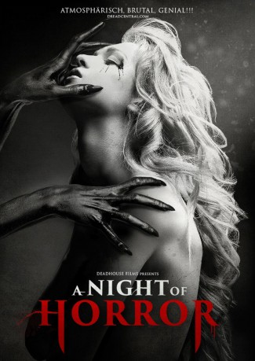

#7113 A Night of Horror Volume 1
 
 IMDB-Wertung: 6.0 / 10
IMDB-Wertung: 6.0 / 10  Metascore: 0
Metascore: 0 
Eine junge Frau erwacht orientierungslos in einem dunklen Gebäude voller Schaufensterpuppen. Als sie sich umsieht, findet sie mit Blut beschmierte Leinwände, Spritzen, Masken, eine Axt und viele weitere Gegenstände, von denen jeder seine ganz eigene unheimliche und blutige Geschichte erzählt: von Zombies, Kannibalen, vom Horror der Schönheit und von einer verstörten Psychiatrie-Insassin…
Jahr: 2015
Dauer: 87 Minuten
FSK: 18
Land: Australien Studio: 108 MediaTonspuren: DTS - ,
Untertitel:
Auflösung: 1080p (1920x816) Größe: 4587 MB
Genre: Thriller, Horror
Regisseur: Bossi Baker, Nicholas Colla, Daniel Daperis, Carmen Falk, Matthew Goodrich, Evan Randall Green, Justin Harding, Goran Spoljaric, Enzo Tedeschi, Rebecca Thomson
Drehbuch: Bossi Baker
Soundtrack:
Darsteller:
- Bianca Bradey als Sam
- Emily Wheaton als Scarlet
- Tegan Higginbotham als Maggie
- Pauline Grace als Woman
- Peter Higginson als Security Guard
- David Macrae als The Priest
- Rosie Keogh als Ella
- Steve Hayden als Kev
- Kaylea Caulfield als Young Ella
- Jessica Hinkson als Natalie Flint
- Nicholas Colla als Adam
- Ben Ridgwell als The Hitchhiker
- Mark Robert Walters als Husband
- Rachel Soderstrom als Skyler
- Darrin Davies als Ella's Father
- Brierly Broad als Short-Haired Woman
- Max Tornello als Man
- Jessica Gower als Beth
- John Flaus als Bob
- Daniel Daperis als Daniel
- Lucia Emmerichs als Grace
- Bridget Williams als Daughter
- Jade Soderstrom als Young Grace
- Jessica Collins als
- Jane Elizabeth Barry als Kay
- Nathan Wentworth als Chris
- Lelda Kapsis als Sally
- Rory Mackenzie als Boy
- Sonia Müller als Skinny Female Teen
- Sequoia Pather als Young Scarlet
- Karissa Lane als Dr. Kelly
- Nicole Simms als Jenna
- Bill Sarkisian als Maintenance Man
- Abbe Ertel Magid als Neighbor
- Rhys Thomas als Rhys
- Leanne Sampson-Bowden als Gypsy Woman
- Paul Vorrasi als Guard
- Caleb Brown als Short Male Teen
- Diane Bradley als Mother
- Sophie Lock als Androgynous Teen
- Jonathan Griffiths als Bearded Man
- Zoe Hayden als Baby
- Erin Fleay als Young Ella
- Jane Howard als Alicia
- Kristy Kennedy als Corpse
Datei: X:\FSK18-2015\Night of Horror Volume 1, A (2015, FSK18, 1920x816).mkv seit 28.09.2017
Festplatte: FSK18
 Es gibt insgesamt 23 Filme in der Gruppe 'FSK18-2015'
Es gibt insgesamt 23 Filme in der Gruppe 'FSK18-2015'